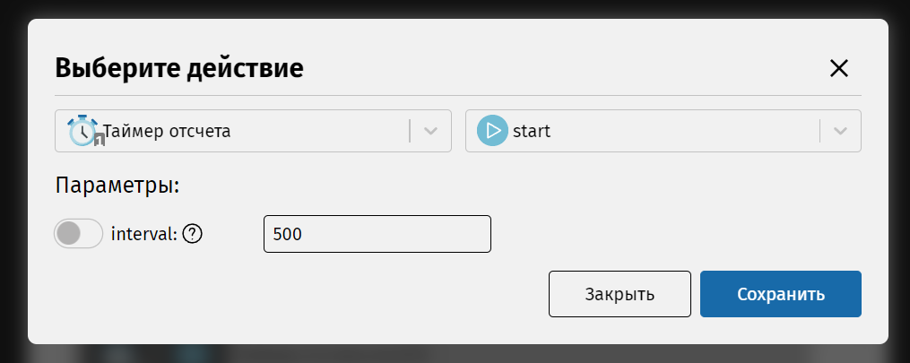

Чтобы у нас появилось событие «прошло 0,5 секунды», нужно запустить отсчет таймера. Для этого откройте редактор состояния «Включен» и добавьте действие для таймера аналогичным образом. Это будет «Старт». Здесь важно указать интервал срабатывания таймера, введите соответствующее число (в миллисекундах) в текстовое поле параметра.
Кнопка слева от названия позволяет переключиться в другой режим выбора значения, при котором в качестве параметра используется не константа, а значение из компонента на выбор (сейчас это не требуется для задачи).
Не забудьте нажать на кнопку «Сохранить».